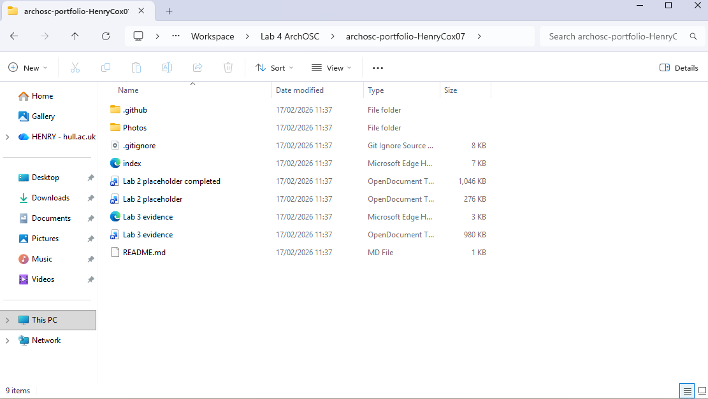
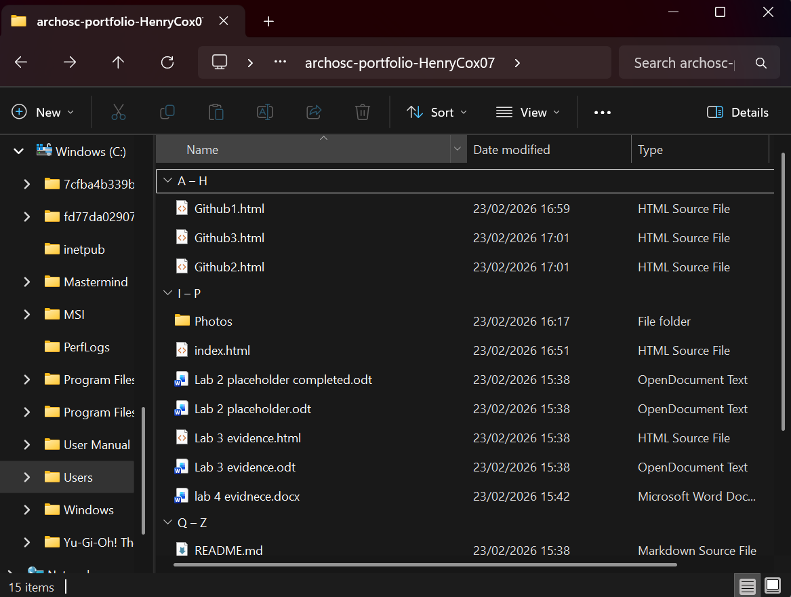
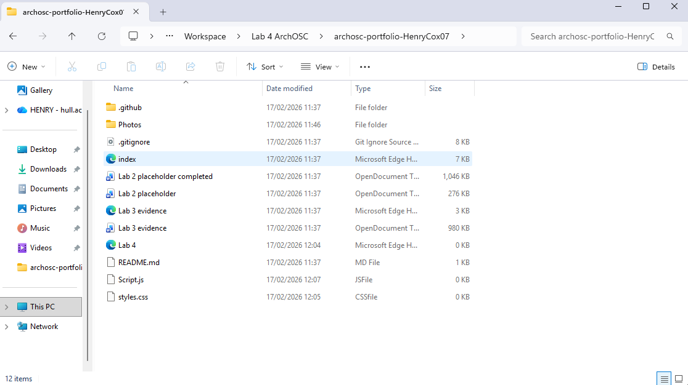
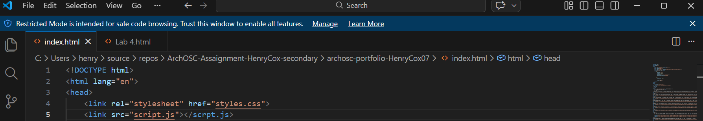
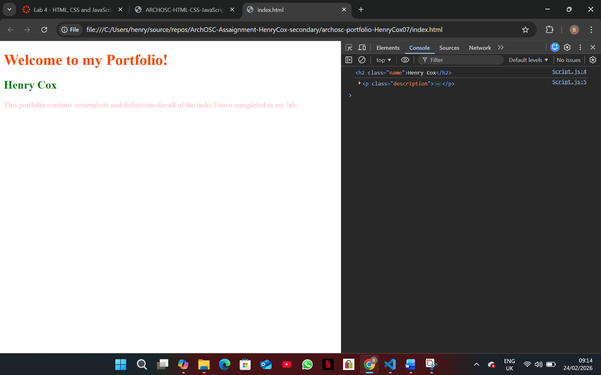
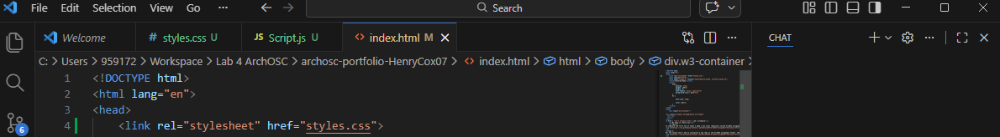
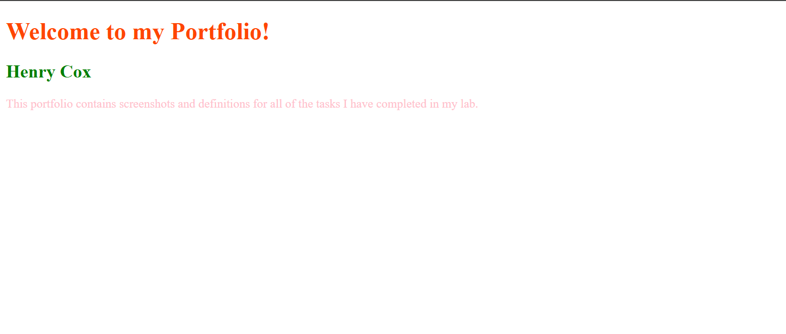
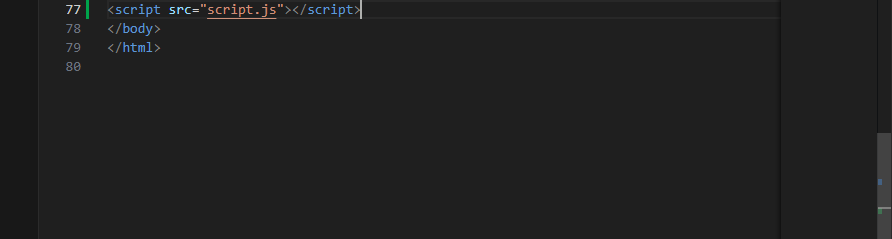
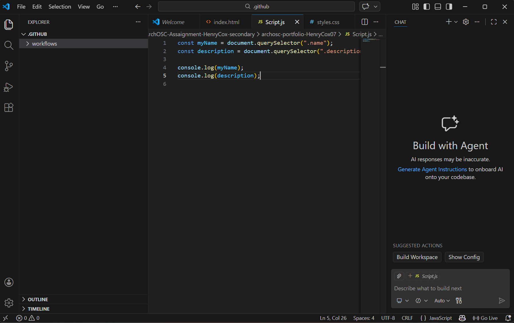

Task 1:
The first task for lab 4 required me to produce a new folder to put my evidence from lab 4 in; what I decided to do was take the contents in my GitHub repo and clone them into the new folder I created. This allowed me to access all the previous content in the repo and add the new content from this lab.

Task 2:
For task 2 I had to produce 2 new files to put in my lab 4 folder. I took the contents from my online repo from the previous labs and cloned them into the new folder so that I can continue updating the repo while keeping all my evidence in one place. I needed to produce these because they will help refine the presentation of my website as currently the images and text are not all at the same size making the website look unprofessional. However, these 2 files when completed will help keep all the images and text at the same size as one another.


Task 3:
For the third task I had to take the new .css and .js files that I made in task 2 and link them in the index.html file that I made in the second lab; I had to link these files so that the website can access the contents of the .css and .js files in turn allowing the website to apply the new styling and JavaScript functionality.

Task 4:
For the fourth task, I had to produce 3 new html files that will be used on the website; the reason that 3 files were made is so that I can have 3 distinct pages for all labs that I have been documenting up to this point. By copying the template provided all the new html files created will follow the same format.
Task 5:
For the 5th task I proceeded to add code into the style.css file which, thanks to the link in the html file, the colours were automatically applied to the corresponding text each colour was assigned to. This is an invaluable tool as it allows me to keep all the text/images for each page on the website separate from the code for the styles significantly reducing the potential clutter in the code.



Task 6:
In this task I had to produce a few lines of JavaScript that my index.html can access thanks to the previously established link made in it. The reason that this JavaScript was added is because it allows access to the classes and elements created within the webpage; by being able to access the elements, JavaScript allows you to read the contents, change the contents, change the style and add interactivity to the elements the JavaScript has access to.

